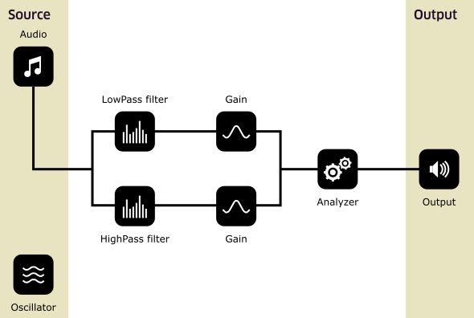

Apart from all the stunning visual stuff you can do in your browser, we also have something in store for tricking out audio. The Audio API gives you the means to party hard with some audio. And we don't mean just controls like play, pause, etc. — but serious in-browser audio processing. You can generate sounds (waveforms), filter the audio, and analyze it.
Seeing is believing
Attention! This example only works in Chrome, the oscillator should also work in Safari.
Source
Oscillator
Audio
How does it work?
The Audio API is a complex beast to tame. It works by building a network of processingmodules with each it's own function. Every module has one (or more) inputs, and can have a multitude of outputs. The diagram below shows what we did for the example on this page.
Having said that, once you grasp the basics, it's actually very pleasant to work with such a powerful API.
Under what should I file this? Useful?
Yes please. When thinking of practical applications for this API, game design comes to mind. But it could also be a real powerhouse in audio content creation. Imagine, complete DJ-machinery built right in the browser. Or, if that's not your bag, here's some other stuff you could do with it:
- Create a cloud-based mixing panel which you could access anywhere
- Generate game sounds on demand
- Set up an entire studio in your browser
- Build your own synthesizer
I love it when a plan comes together...
About that: there is one snag. The Audio API is only supported on Chrome and Safari (and Safari Mobile). However, the good news is that Mozilla had an Audio API before it became official, and they said they're working on implementing the new API as we speak.
We'd like to see your insides, Mr. Source.
No problem, look all you like!